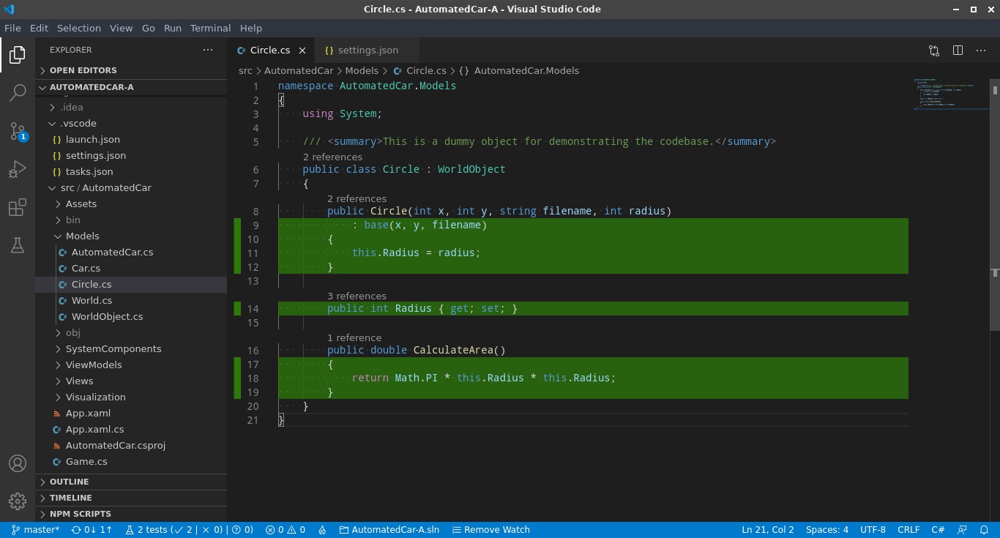

Visual Studio Code
Csak a hivatalos Microsoft féle build hajlandó együttműködni a .NET debuggerrel!
EditorConfig for VS Code
This plugin attempts to override user/workspace settings with settings found in .editorconfig files.
A formázási beállításokhoz a MS ajánlása szerinti .editorconfig fájl hozzáadásra került a projekthez.
C#
- Lightweight development tools for .NET Core.
- Great C# editing support, including Syntax Highlighting, IntelliSense,Go to Definition, Find All References, etc.
- Debugging support for .NET Core (CoreCLR).
- NOTE: Mono debugging is not supported. Desktop CLR debugging has limited support.
- Support for project.json and csproj projects on Windows, macOS and Linux.
Auto-Using for C#
Auto-imports and provides intellisense for references that were not yet imported in a C# file.
Automatikus kódformázás
StackOverflow://Auto format C# code In Visual Studio Code
.NET Core Test
Unit test támogatás MSTest, xUnit és NUnit keretrendszerekhez.
Ajánlott beállítások, amiket a .vscode/settings.json fájlban kell elhelyezni:
{
"dotnet-test-explorer.testProjectPath": "**/*Tests.csproj",
"dotnet-test-explorer.autoWatch": true
}
Code Coverage
A tesztlefedettség számítását a Coverlet végzi, amit a teszt projekthez adtam hozzá. Ennek riportját használja a Codecov is.
A riportot cobertura, lcov fomátumban is legeneráltatom, előbbi a Codcov-nak, utóbbi a Coverage Gutters-nak kell, amely a VS Code-on belül ad visszajelzéseket. Utóbbi beállításaiban meg kell adni, hogy a report coverage.info néven áll elő, ezt keresse. Illetve be kell kapcsolni a statusbar „Watch” gombjábal.
Formátumbeállítás runsettings.xml állományon keresztül [forrás]:
<?xml version="1.0" encoding="utf-8" ?>
<RunSettings>
<DataCollectionRunSettings>
<DataCollectors>
<DataCollector friendlyName="XPlat code coverage">
<Configuration>
<Format>lcov,cobertura</Format>
</Configuration>
</DataCollector>
</DataCollectors>
</DataCollectionRunSettings>
</RunSettings>
